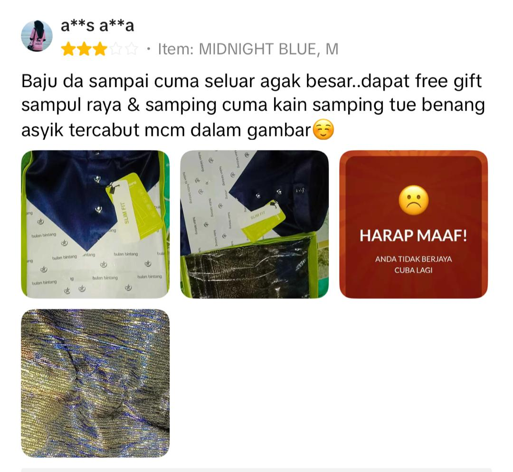
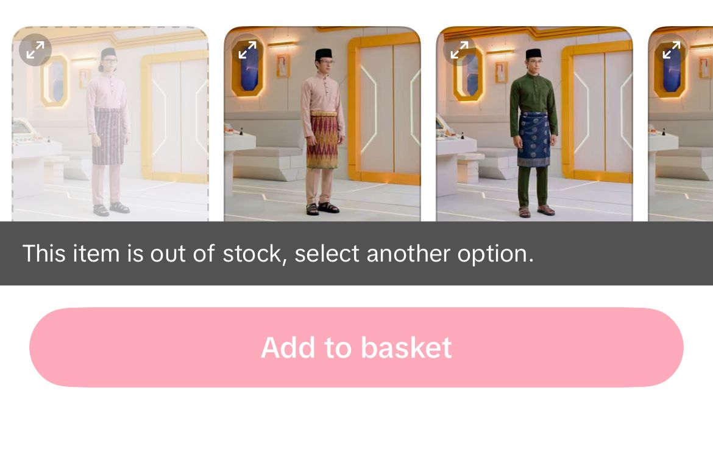
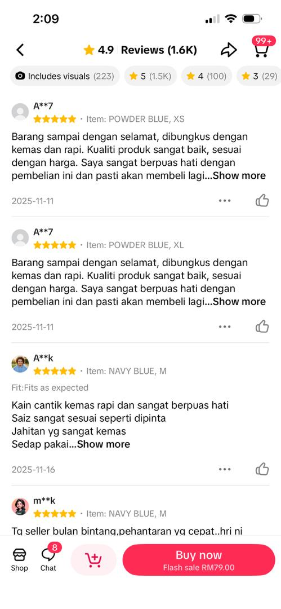

BEST SELLER

01
Baju Melayu Slim Fit
Signature cekak musang design with a modern slim-fit cutting.
INDIVIDUAL ASSIGNMENT · E-PORTFOLIO
A case study of Bulan Bintang, a Malaysian fashion brand known for modern Baju Melayu, focusing on real customer and business challenges and practical innovation ideas.

THE ORGANIZATION

Azzim Zahid Azmi (Meri) Founder of Bulan Bintang
Bulan Bintang is a Malaysian fashion brand that has become widely associated with modern Baju Melayu, Kurta, Baju Kurung and modest fashion. The brand combines traditional Malaysian clothing with contemporary cuts, colours and a modern shopping experience.
The brand was founded by Azzim Zahid Azmi, also known as Meri . His entrepreneurial journey began at a young age, initially selling clothing and later developing Bulan Bintang into a recognised local fashion brand.
Bulan Bintang began with a focus on simple and modern Kurta designs before expanding into Baju Melayu and other modest-wear products. The brand's growth shows how traditional clothing can be redesigned to match the lifestyle and expectations of modern customers.
Today, the brand places strong emphasis on product design, colour choices, fitting, convenience and customer experience. These elements are important because fashion customers increasingly expect products that are not only attractive, but also practical and comfortable.
Background information is based on reports from Malaysian media and Bulan Bintang's official product information.
FROM SMALL BUSINESS TO LOCAL BRAND
Bulan Bintang's journey began with a relatively small clothing business. The brand initially focused on Kurta before expanding its product range.
As customer demand increased, Bulan Bintang developed modern Baju Melayu designs that combine traditional elements with contemporary styling. This approach helped the brand appeal particularly to younger customers looking for a cleaner and more modern appearance.
CUSTOMER FAVOURITES
Selected Bulan Bintang products that represent the brand's modern approach to traditional Malaysian wear.
Signature cekak musang design with a modern slim-fit cutting.

A more relaxed interpretation of the brand's signature Baju Melayu design.

One of the product categories that represents the brand's early fashion direction.

Modest fashion that extends the brand beyond traditional menswear.
Built around Malaysian fashion and festive wear.
Traditional clothing presented with contemporary styling.
Product design and customer feedback influence the brand experience.
Raya demand makes product planning, sizing and stock availability important.
WHAT NEEDED ATTENTION
Bulan Bintang has developed several product features to improve comfort, fitting and usability. However, customer experience also creates challenges that require continuous innovation.
QUALITY
Product quality is important because customers expect their Baju Melayu to remain comfortable, durable and presentable throughout the festive season. Public criticism about product durability shows how quality concerns can quickly affect customer trust.

CHOICE
Bulan Bintang offers a wide range of colours and variations. While this gives customers more freedom, having too many choices can make it difficult to decide which colour is most suitable. This is especially relevant when customers are buying matching outfits for families.

SIZING
Customers shopping online cannot physically try the clothing before purchasing. Different body shapes, fitting preferences and product cuts can therefore make size selection challenging.

DEMAND
Festive periods create a major increase in demand for Baju Melayu. Popular colours, sizes and designs can sell quickly, creating pressure on stock planning and delivery operations.

FEEDBACK
Social media can make customer opinions highly visible. Positive feedback can strengthen the brand, while complaints can spread quickly. A structured feedback system can help the company identify problems before launching new products.

EXISTING PRODUCT INNOVATION
These features demonstrate how Bulan Bintang has incorporated practical design improvements into traditional Malaysian clothing.

Additional expansion fabric provides more flexibility and comfort while maintaining the overall appearance of the Baju Melayu.

The hidden side zipper is designed to make the Baju Melayu easier to wear while maintaining a clean and modern appearance.

Arm zips provide additional convenience for customers, particularly when performing wudhu.

The elasticated waistband is combined with zip and hook fastening to improve comfort and provide a more secure fit.
FROM PROBLEM TO IDEA
The proposed approach follows a simple human-centred process. First understand the problem, then understand the customer, generate ideas, test them and improve them using feedback.
Collect complaints, reviews, sales signals and customer comments.
Ask what customers actually need, not only what they buy.
Brainstorm practical ideas using technology and human feedback.
Run a small pilot before applying a solution to the full business.
Use feedback to make the product and experience better.
FIVE IDEAS
QUALITY GUARANTEE
Introduce random batch inspections for fabric, stitching, buttons, zips and colour consistency. A QR code can explain that the item has passed a quality check.
SMART SHOPPING
A short interactive quiz recommends a small number of colours based on preference, skin tone, occasion and family matching.
AI CONCEPT
Customers enter height, weight and measurements. The system recommends a fit and size instead of making the customer rely only on a standard chart.
DATA
Use previous sales data to predict demand by colour, size, location and timing. Pre-orders can also help reveal demand before production.
CO-CREATION
Invite customers, former customers, creators and different body types to test new products before launch and provide structured feedback.
The quality issue and customer-inspection response are supported by public reports. The AI, forecasting, colour finder and Customer Lab concepts are proposed innovations for this assignment, not claims that Bulan Bintang has already implemented them.
VISUAL EVIDENCE
Add official product photographs, screenshots of relevant news reports and a short video explaining the innovation process. Replace the video placeholder with your selected YouTube video before publishing on Wix.
Find Relevant VideosVIDEO PLACEHOLDER
Replace this area with an embedded Bulan Bintang / Baju Melayu video in Wix.EXPECTED IMPACT
More transparent quality checks can make customers feel safer about their purchase.
Personal recommendations can make online shopping faster and less confusing.
Better demand planning can reduce unnecessary shortages and excess stock.
Customer testing can reveal problems before products reach the wider market.
Listening and responding to customers can support a stronger long-term relationship.
THE MAIN LESSON
It must listen to customers, identify problems and continuously improve its products and services. The Bulan Bintang case shows that creativity does not always mean inventing something completely new. It can also mean finding a better way to solve an existing problem.

INDIVIDUAL ASSIGNMENT